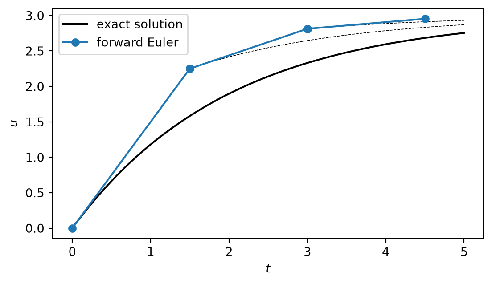
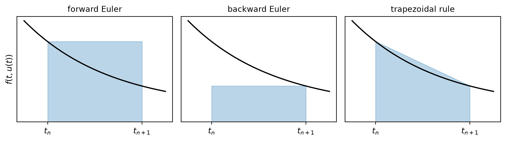
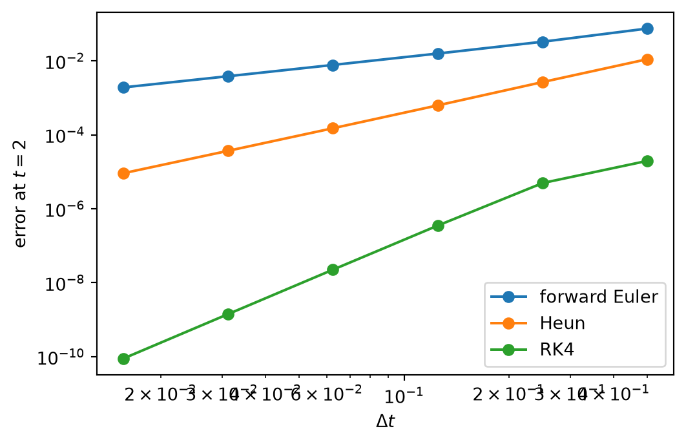
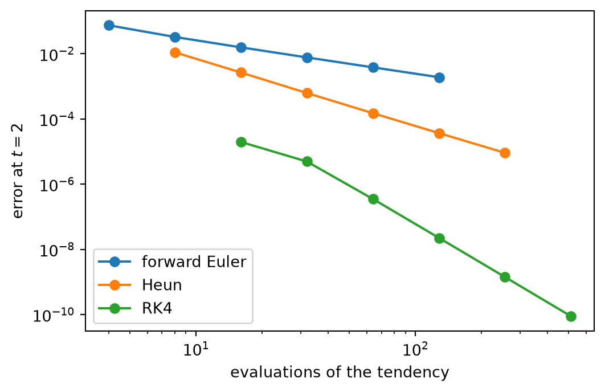

read the qualitative behaviour of an ODE from its direction field,
derive the forward and backward Euler methods in three ways and implement them,
derive the local truncation error of a method and explain how it determines the global error,
derive the order conditions of two-stage Runge–Kutta methods and use the classical method of fourth order,
compare methods by the accuracy they reach for a given amount of work,
explain how adaptive methods choose the time step.
Every prognostic model steps forward in time. After the spatial derivatives of a PDE have been discretized, what remains is a large system of ordinary differential equations in time. The methods of this unit are therefore the time stepping schemes of weather, ocean and groundwater models, studied here on problems small enough to be understood completely.
The function \(f\) is the tendency: it gives the rate of change of the state for any time and any state. In much of the literature on ODEs the unknown is called \(y\) and the step \(h\); we keep \(u\) and \(\Delta t\).
The problem is well-posed (Chapter 2) if \(f\) is continuous and does not change too rapidly with \(u\). Precisely, \(f\) must satisfy a Lipschitz condition: there is a constant \(L\) such that
\[
|f(t, a) - f(t, b)| \le L \, |a - b|
\tag{5.2}\]
for all states \(a\), \(b\) in the region of interest. If \(f\) is differentiable, \(L\) is the largest value of \(|\partial f / \partial u|\). The constant \(L\) has the unit of one over time: \(1/L\) is the shortest time scale on which the tendency responds to a change of the state. It reappears in the error analysis below.
5.1.1 Direction fields
Before solving Equation 5.1 it is useful to understand how its solutions behave. At every point of the \((t, u)\) plane the equation prescribes the slope of the solution passing through it, namely \(f(t, u)\). Drawing a short line segment with this slope at many points gives the direction field. Solutions are the curves that follow the segments.
Figure 5.1: Direction field of \(\mathrm{d}u/\mathrm{d}t = (3 - u)/2\) with three exact solutions. All solutions approach the equilibrium \(u = 3\).
Figure 5.1 shows, without any calculation, that \(u = 3\) is an equilibrium, since the slope is zero there, and that it is stable: above it the slope is negative, below it positive.
5.1.2 An exact solution
Equation 5.3 is separable: all terms with \(u\) can be collected on one side and all terms with \(t\) on the other,
\[
- \ln |3 - u| = \frac{t}{2} + C
\quad \Longrightarrow \quad
3 - u = \tilde C \, e^{-t/2} ,
\]
where \(\tilde C = \pm e^{-C}\). The initial condition \(u(0) = u_0\) gives \(\tilde C = 3 - u_0\), and therefore
\[
u(t) = 3 + (u_0 - 3) \, e^{-t/2} .
\tag{5.4}\]
The distance from the equilibrium decays exponentially with the time scale 2. With \(u - 3\) as the unknown this is the decay equation Equation 1.4 with \(k = \tfrac12\), the equation of radioactive decay with decay constant \(k\).
Exact solutions exist only for special tendencies. For the rest we need numerical methods. Exact solutions remain indispensable, because they are what numerical methods are verified against.
5.2 The forward Euler method
We look for approximations \(u_n\) of the solution at the times \(t_n = t_0 + n \, \Delta t\). The simplest method can be derived in three ways. Each of them leads to its own family of better methods.
5.2.1 First view: following the tangent
At \(t_0\) we know the solution, \(u_0\), and its slope, \(f(t_0, u_0)\). The tangent to the solution at this point is
\[
u = u_0 + f(t_0, u_0) \, (t - t_0) .
\]
If \(t_1\) is close to \(t_0\), the tangent stays close to the solution, and we take its value at \(t_1\) as the approximation: \(u_1 = u_0 + \Delta t \, f(t_0, u_0)\). At \(t_1\) we do not know the solution, but we have \(u_1\), and we repeat the step with the slope \(f(t_1, u_1)\). In general
This is the forward Euler method. In the direction field it moves along one line segment per step (Figure 5.2).

Figure 5.2: Three steps of the forward Euler method for \(\mathrm{d}u/\mathrm{d}t = (3 - u)/2\) with \(\Delta t = 1.5\). Each step follows the tangent of the solution through the current point (dashed), not the solution that started at \(u_0\).
5.2.2 Second view: replacing the derivative
We replace the derivative in Equation 5.1 at time \(t_n\) by the forward difference Equation 3.3,
and solve for \(u_{n+1}\). This gives Equation 5.5 again, and explains the name. It also tells us the accuracy to expect: the forward difference is of first order.
5.2.3 Third view: integrating the tendency
Integrating Equation 5.1 from \(t_n\) to \(t_{n+1}\) gives, without any approximation,
The integral cannot be evaluated, because the integrand contains the unknown solution. The forward Euler method approximates it by a rectangle whose height is the integrand at the left end, \(\Delta t \, f(t_n, u_n)\). Better time stepping schemes are better quadrature rules for this integral (Chapter 3).

Figure 5.3: The tendency integrated over one time step. Forward Euler uses the value at the start of the step (left), backward Euler the value at the end (middle), the trapezoidal rule the mean of both (right).
The unknown \(u_{n+1}\) now appears on both sides, inside the tendency. The formula does not give \(u_{n+1}\) explicitly; it is an equation that defines \(u_{n+1}\)implicitly and has to be solved in every time step. Methods such as Equation 5.5, which compute the new value directly from known values, are called explicit.
Linear tendency. For the decay equation, \(f = -k u\), the equation is linear in \(u_{n+1}\) and can be solved by hand:
\[
u_{n+1} = u_n - k \, \Delta t \, u_{n+1}
\quad \Longrightarrow \quad
u_{n+1} = \frac{u_n}{1 + k \, \Delta t} .
\tag{5.8}\]
Compare this with the forward Euler result \(u_{n+1} = (1 - k \Delta t) u_n\) from Equation 1.6. The factor \(1 / (1 + k \Delta t)\) lies between 0 and 1 for every time step: the backward Euler solution decays monotonically however large \(\Delta t\) is, where the forward Euler solution oscillated and grew for \(k \Delta t > 2\). This is the reason to accept the extra work of an implicit method, and the subject of Chapter 6.
Nonlinear tendency. In general we write Equation 5.7 as a root finding problem for the unknown \(U = u_{n+1}\),
\[
G(U) = U - u_n - \Delta t \, f(t_{n+1}, U) = 0 ,
\]
and solve it with Newton’s method Equation 3.15. The derivative is \(G'(U) = 1 - \Delta t \, \partial f / \partial u\), so that one Newton iteration reads
started from \(U^{(0)} = u_n\). Because \(u_n\) is already close to \(u_{n+1}\), two or three iterations usually suffice. For a system of \(N\) equations the division becomes the solution of a linear system with the matrix \(I - \Delta t \, J\), where \(J\) is the Jacobian of the tendency (Equation 3.17). An implicit time step of a PDE model therefore costs at least one solution of a large linear system.
def euler_backward(f, dfdu, u0, t_end, dt, newton_iterations=4): n_steps =int(round(t_end / dt)) t = dt * np.arange(n_steps +1) u = np.empty(n_steps +1) u[0] = u0for n inrange(n_steps): U = u[n]for _ inrange(newton_iterations): G = U - u[n] - dt * f(t[n +1], U) U = U - G / (1- dt * dfdu(t[n +1], U)) u[n +1] = Ureturn t, u# nonlinear test problem du/dt = -u^2, u(0) = 1, exact solution 1 / (1 + t)f_nl =lambda t, u: -u**2dfdu_nl =lambda t, u: -2* ufor dt in [0.5, 0.25, 0.125]: t, u = euler_backward(f_nl, dfdu_nl, 1.0, 2.0, dt)print(f"dt = {dt:5.3f}: error at t = 2 is {abs(u[-1] -1/3):.5f}")
dt = 0.500: error at t = 2 is 0.05425
dt = 0.250: error at t = 2 is 0.02867
dt = 0.125: error at t = 2 is 0.01477
The backward Euler method is also of first order.
5.4 Errors
5.4.1 Local and global error
Two errors must be distinguished.
The global error is what we care about: the difference between the exact and the numerical solution at time \(t_n\),
\[
E_n = u(t_n) - u_n .
\]
The local truncation error\(\tau_n\) is the error made in a single step that starts from the exact solution. It measures how well the exact solution satisfies the numerical formula. In Figure 5.2 it is the distance, after one step, between an Euler segment and the dashed solution through its starting point.
In addition there is the round-off error of each step. For the time steps used in practice it is much smaller than the truncation error, and we neglect it here.
5.4.2 Local truncation error of the forward Euler method
We expand the exact solution in a Taylor series around \(t_n\),
where the last term is the remainder, with \(\xi_n\) somewhere between \(t_n\) and \(t_{n+1}\). Since the exact solution satisfies the differential equation, \(u'(t_n) = f\big(t_n, u(t_n)\big)\), and
\[
u(t_{n+1}) = \underbrace{u(t_n) + \Delta t \, f\big(t_n, u(t_n)\big)}_{\text{one Euler step from the exact solution}} + \underbrace{\frac{\Delta t^2}{2} u''(\xi_n)}_{\tau_n} .
\tag{5.9}\]
The local truncation error of the forward Euler method is proportional to \(\Delta t^2\) and to the curvature of the solution. If \(|u''| \le M\) on the interval of interest, then \(|\tau_n| \le M \Delta t^2 / 2\).
The second derivative can be expressed by the tendency. Differentiating \(u' = f(t, u)\) with the chain rule,
To reach a fixed time \(T\) we need \(n = T / \Delta t\) steps. If the local errors simply added up, the global error would be about \(n \cdot M \Delta t^2 / 2 = T M \Delta t / 2\): one power of \(\Delta t\) is lost, and the method is of first order. This argument is incomplete, because an error made in one step is carried along and changed by all later steps. The complete argument takes three steps.
Step 1: a recursion for the error. We subtract the Euler formula Equation 5.5 from Equation 5.9:
The bracket is the difference of the tendency at the exact and at the numerical state. By the Lipschitz condition Equation 5.2 it is at most \(L \, |E_n|\) in magnitude. Hence
Each step multiplies the existing error by at most \(1 + L \Delta t\) and adds a new local error.
Step 2: solving the recursion. We start without error, \(E_0 = 0\), and apply Equation 5.11 repeatedly, writing \(q = 1 + L \Delta t\) and \(\tau = M \Delta t^2 / 2\):
Step 3: simplifying. Since \(1 + x \le e^x\) for all \(x\), we have \((1 + L \Delta t)^n \le e^{n L \Delta t} = e^{L t_n}\) with \(t_n = n \Delta t\) measured from \(t_0 = 0\). One factor \(\Delta t\) cancels:
This is the result. At any fixed time the global error of the forward Euler method is bounded by a constant times \(\Delta t\): the method converges, with order one. The rule that came out of the incomplete argument holds in general:
A local truncation error of order \(\Delta t^{p+1}\) gives a global error of order \(\Delta t^{p}\). The order of a method is \(p\).
The constant in Equation 5.12 deserves a comment. It grows exponentially with \(L t_n\). For a problem whose solutions diverge from each other, this is realistic: errors grow as fast as neighbouring solutions separate, which is the predictability problem of Chapter 8. For a problem whose solutions converge, such as Equation 5.3, the bound is far too pessimistic, because the Lipschitz condition ignores the sign of \(\partial f / \partial u\). Errors made early are then damped instead of amplified.
5.5 Methods of higher order
5.5.1 Heun’s method
In the third view a better method needs a better quadrature rule for Equation 5.6. The trapezoidal rule Equation 3.14 uses the mean of the integrand at both ends of the step:
This is the implicit trapezoidal method. To avoid the implicit equation, we replace the unknown \(u_{n+1}\) inside the tendency by a forward Euler estimate, the predictor, and then apply the trapezoidal formula as corrector:
This is Heun’s method, also called the improved Euler method. It is explicit and needs two evaluations of the tendency per step, two stages.
5.5.2 The order of two-stage methods
Is Heun’s method really of second order, although the predictor is only of first order? We check this for a whole family of methods at once. Consider
\[
k_1 = f(u_n), \qquad
k_2 = f(u_n + c \, \Delta t \, k_1), \qquad
u_{n+1} = u_n + \Delta t \, (b_1 k_1 + b_2 k_2) ,
\tag{5.15}\]
with parameters \(b_1\), \(b_2\), \(c\). To keep the algebra short we take a tendency that depends only on the state, \(f = f(u)\), and write \(f\) and \(f'\) for \(f(u_n)\) and its derivative with respect to \(u\). The result holds in general.
The exact solution. Starting from \(u_n\), the Taylor series is \(u(t_n + \Delta t) = u_n + \Delta t \, u' + \tfrac12 \Delta t^2 u'' + O(\Delta t^3)\). With \(u' = f\) and, from Equation 5.10, \(u'' = f' f\):
\[
u(t_n + \Delta t) = u_n + \Delta t \, f + \frac{\Delta t^2}{2} f' f + O(\Delta t^3) .
\]
The numerical solution. We expand the second stage around \(u_n\):
\[
k_2 = f(u_n + c \, \Delta t \, f) = f + c \, \Delta t \, f' f + O(\Delta t^2) .
\]
\[
u_{n+1} = u_n + \Delta t \, (b_1 + b_2) \, f + \Delta t^2 \, b_2 c \, f' f + O(\Delta t^3) .
\]
Comparison. The two expansions agree up to the terms with \(\Delta t^2\), leaving a local truncation error of \(O(\Delta t^3)\) and hence a method of second order, if
These are the order conditions. They are two equations for three parameters, so there is a family of second-order methods with two stages.
Method
\(c\)
\(b_1\)
\(b_2\)
Quadrature rule
Heun
1
\(\tfrac12\)
\(\tfrac12\)
trapezoidal
Midpoint
\(\tfrac12\)
0
1
midpoint
The midpoint method takes half an Euler step and uses the tendency there for the full step: \(u_{n+1} = u_n + \Delta t \, f\big(t_n + \tfrac12 \Delta t, \; u_n + \tfrac12 \Delta t \, k_1\big)\). Forward Euler is the member of the family Equation 5.15 with \(b_2 = 0\); it violates the second condition and is of first order.
5.5.3 Runge–Kutta methods
Methods of the form Equation 5.15, with any number of stages, are Runge–Kutta methods. The most widely used one has four stages:
This classical Runge–Kutta method (RK4) is of fourth order. Its order conditions are derived as above, by matching the Taylor series up to \(\Delta t^4\); there are eight of them. If \(f\) depends only on \(t\), the stages are the integrand at the left end, twice at the midpoint and at the right end, with the weights \(\tfrac16, \tfrac46, \tfrac16\): Equation 5.17 then is Simpson’s rule.
Up to order four, a method of order \(p\) needs \(p\) stages. Beyond that more stages than the order are needed, which is one reason why RK4 is so popular.
5.5.4 Verification
We verify the orders on the nonlinear test problem \(\mathrm{d}u/\mathrm{d}t = -u^2\), \(u(0) = 1\), with the exact solution \(u = 1 / (1 + t)\). Each method becomes a function that makes one step: it receives the tendency f, the time t, the state u and the time step dt and returns the state at t + dt. A second function, integrate, repeats such steps up to the end time. The method is handed to it as an argument, so the same loop serves all three methods.
def euler_forward_step(f, t, u, dt):return u + dt * f(t, u)def heun_step(f, t, u, dt): k1 = f(t, u) # slope at the start of the step k2 = f(t + dt, u + dt * k1) # slope at the end, after an Euler stepreturn u + dt * (k1 + k2) /2# step with the mean of the two slopesdef rk4_step(f, t, u, dt): k1 = f(t, u) k2 = f(t + dt /2, u + dt /2* k1) k3 = f(t + dt /2, u + dt /2* k2) k4 = f(t + dt, u + dt * k3)return u + dt /6* (k1 +2* k2 +2* k3 + k4)def integrate(step, f, u0, t_end, dt):# integrate from t = 0 to t_end with the one-step method "step" n_steps =round(t_end / dt) # number of steps, computed once t_values = [0.0] # lists of the times and states u_values = [u0] u = u0for n inrange(n_steps): u = step(f, n * dt, u, dt) # one step from t = n dt to (n + 1) dt t_values.append((n +1) * dt) u_values.append(u)return np.array(t_values), np.array(u_values) # lists -> arrays
As in Exercise 1, the time is computed from the step counter n instead of adding dt repeatedly. The functions work unchanged if the state u is a NumPy array instead of a number, because + and * act on each element of an array.
For the convergence test we integrate to \(t = 2\), where the exact solution is \(u = 1/3\), with \(N = 4, 8, \dots, 128\) steps.
def f_nl(t, u):return-u**2n_list = [4, 8, 16, 32, 64, 128] # numbers of stepsdt_list = []for n in n_list: dt_list.append(2.0/ n)def errors_at_t2(step):# errors at t = 2 of the method "step" for all time steps in dt_list errors = []for dt in dt_list: t, u = integrate(step, f_nl, 1.0, 2.0, dt) errors.append(abs(u[-1] -1/3)) # u[-1] is the last value, at t = 2return errorserror_euler = errors_at_t2(euler_forward_step)error_heun = errors_at_t2(heun_step)error_rk4 = errors_at_t2(rk4_step)print(" dt order Euler order Heun order RK4")for i inrange(1, len(dt_list)): # dt is halved: order = log2(error ratio) p_euler = np.log2(error_euler[i -1] / error_euler[i]) p_heun = np.log2(error_heun[i -1] / error_heun[i]) p_rk4 = np.log2(error_rk4[i -1] / error_rk4[i])print(f"{dt_list[i]:6.4f}{p_euler:10.2f}{p_heun:11.2f}{p_rk4:10.2f}")fig, ax = plt.subplots(figsize=(6, 3.8))ax.loglog(dt_list, error_euler, "o-", label="forward Euler")ax.loglog(dt_list, error_heun, "o-", label="Heun")ax.loglog(dt_list, error_rk4, "o-", label="RK4")ax.set_xlabel(r"$\Delta t$")ax.set_ylabel("error at $t = 2$")ax.legend()plt.show()
dt order Euler order Heun order RK4
0.2500 1.19 2.06 2.00
0.1250 1.06 2.09 3.82
0.0625 1.03 2.06 3.97
0.0312 1.01 2.03 3.99
0.0156 1.01 2.01 4.00

Figure 5.4: Global error at \(t = 2\) as a function of the time step for \(\mathrm{d}u/\mathrm{d}t = -u^2\). The slopes are the orders of the methods.
5.5.5 Accuracy for a given amount of work
A step of RK4 costs four evaluations of the tendency, a step of forward Euler one. In a weather model one evaluation of the tendency is the entire computation of all spatial derivatives and all physical processes, so the fair comparison is the error reached for a given number of evaluations. With \(N\) steps, forward Euler needs \(N\) evaluations, Heun \(2N\) and RK4 \(4N\).
evaluations_euler = []evaluations_heun = []evaluations_rk4 = []for n in n_list: evaluations_euler.append(1* n) evaluations_heun.append(2* n) evaluations_rk4.append(4* n)fig, ax = plt.subplots(figsize=(6, 3.8))ax.loglog(evaluations_euler, error_euler, "o-", label="forward Euler")ax.loglog(evaluations_heun, error_heun, "o-", label="Heun")ax.loglog(evaluations_rk4, error_rk4, "o-", label="RK4")ax.set_xlabel("evaluations of the tendency")ax.set_ylabel("error at $t = 2$")ax.legend()plt.show()

Figure 5.5: Error at \(t = 2\) as a function of the number of evaluations of the tendency.
In Figure 5.5 the method of higher order wins as soon as more than a rough approximation is required: with about 100 evaluations RK4 is many orders of magnitude more accurate than forward Euler. Two qualifications apply in practice. The advantage exists only if the solution is smooth. And in models of the atmosphere the time step is often limited by stability rather than accuracy (Chapter 6); then the largest stable time step per evaluation decides.
5.6 Systems of equations
Nothing in the derivations above required \(u\) to be a single number. For a system of \(N\) equations the state is a vector \(\vec u\) and the tendency a vector function,
and all formulas of this unit apply unchanged with vectors in the place of numbers. Equations of higher order are first rewritten as first-order systems (Chapter 2). The functions rk4_step, euler_forward_step and integrate defined above accept a NumPy array as the state; integrate then returns a two-dimensional array with one row per time and one column per variable.
As an example we integrate the predator–prey equations of Chapter 2,
\[
\frac{\mathrm{d}x}{\mathrm{d}t} = a x - \alpha x y, \qquad
\frac{\mathrm{d}y}{\mathrm{d}t} = -c y + \gamma x y .
\]
Figure 5.6: Predator–prey equations integrated with RK4 (lines) and forward Euler (dashed) with the same time step \(\Delta t = 0.05\). The exact solution is periodic.
The exact solution is a closed curve in the plane of the two populations. RK4 reproduces it. The forward Euler solution spirals outward: the amplitude of the oscillation grows in every cycle. The error does not show up as random noise but as a systematic, qualitatively wrong behaviour. Why forward Euler amplifies oscillations is answered in Chapter 7.
5.7 Adaptive time steps
So far the time step was constant. The local truncation error, however, depends on the solution: for forward Euler it is proportional to \(u''\). A constant step is too small where the solution is smooth and too large where it changes quickly. Adaptive methods choose the step such that the local error stays below a tolerance.
This requires an estimate of the local error without knowing the exact solution. The idea is to compute each step twice, with two methods of different order, \(p\) and \(p + 1\). The difference of the two results,
estimates the local error of the less accurate one, which is proportional to \(\Delta t^{p+1}\). If err exceeds the tolerance tol, the step is rejected and repeated with a smaller \(\Delta t\). In either case the next step size follows from the requirement that the error, scaled with \(\Delta t^{p+1}\), should equal the tolerance:
with a safety factor of 0.9. Embedded Runge–Kutta pairs make this cheap: the two methods share the same stages and differ only in the weights \(b_i\), so the error estimate needs no additional evaluations of the tendency. The default method of scipy.integrate.solve_ivp, called RK45, is such a pair of orders four and five.
Figure 5.7: Predator–prey equations solved with the adaptive method RK45. Dots mark the time steps chosen by the method (top). The step is small where the solution changes rapidly (bottom).
131 steps, 950 evaluations of the tendency
Adaptive methods are the standard for ODE problems of moderate size, and for these solve_ivp should be preferred to a method written by hand. Large models of the atmosphere and ocean, in contrast, run with a fixed time step. Their step is dictated by stability, the cost of a rejected step is high, and a fixed step keeps the model reproducible and simple to couple with other components.
5.8 Summary
The forward Euler method follows the tangent, replaces the derivative by a forward difference, or integrates the tendency with a rectangle. It is explicit and of first order.
The backward Euler method evaluates the tendency at the new time. It is implicit: every step requires the solution of an equation, for nonlinear problems with Newton’s method.
The local truncation error is the error of one step from the exact solution. A local error of order \(\Delta t^{p+1}\) gives a global error of order \(\Delta t^p\).
Runge–Kutta methods reach higher order with several evaluations of the tendency per step. Their coefficients follow from matching the Taylor series of the exact solution. Heun’s method and the midpoint method are of second order, the classical Runge–Kutta method of fourth order.
Methods are compared by the accuracy reached for a given number of evaluations of the tendency.
Adaptive methods estimate the local error from two methods of different order and adjust the time step.
5.9 Further reading
Boyce and DiPrima (2009), chapters 2 and 8, for direction fields, the Euler method and its errors; LeVeque (2007), chapter 5, for one-step methods and their analysis; Durran (2010), chapter 2, for time stepping in geophysical models.
Boyce, William E., and Richard C. DiPrima. 2009. Elementary Differential Equations and Boundary Value Problems. 9th ed. Wiley.
Durran, Dale R. 2010. Numerical Methods for Fluid Dynamics: With Applications to Geophysics. 2nd ed. Springer.
LeVeque, Randall J. 2007. Finite Difference Methods for Ordinary and Partial Differential Equations. SIAM.